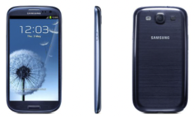

Park Gyeol
/ student
자기소개
취미
활동
SNS
GALAXY S3
GALAXY S4
GALAXY S5
GALAXY S6
GALAXY S7
GALAXY S8
GALAXY S9
GALAXY S10
GALAXY S20
GALAXY S21
GALAXY S3
 갤럭시 s3는 2012년 삼성의 플래그십 스마트폰입니다.
3G 버전과 LTE 버전이 따로 출시되었으며 두 가지 버전의 차이점은 DMB 안테나가 있을 경우에 LTE, 그렇지 않으면 3G 모델이었습니다.
제가 기억하는 갤럭시 S3의 가장 큰 특징은 그전까지 볼 수 없었던 전면 곡면 유리를 탑재한 것이었습니다.
요즘에는 삼성의 거의 모든 플래그십 스마트폰들이 엣지 디스플레이를 탑재하여 나오지만 이때까지만 해도 그런 기술이 없었기 때문에
곡면 유리를 탑재하여 그립감에서 큰 이점을 주었다고 생각합니다.
또한, 갤럭시 S3의 잠금 화면에서 보이는 물결소리와 이미지는 갤럭시 S3의 시그니처가 되었는데 이것 또한 아이폰의 벨 소리처럼 한동안
갤럭시의 시그니처가 되었기 때문에 아주 좋은 디자인이었다고 생각합니다.
스펙은 LTE 버전이 메인이었기 때문에 LTE 기준 주요 스펙은 엑시노스 4(쿼드코어), 2GB RAM, 4.8인치의 HD 화질의 AMOLED 디스플레이,
2100mAh의 배터리, 800만 화소의 후면 카메라 등이 있습니다.
갤럭시 S3의 특징은 조약돌 모양을 연상할 수 있는 디자인이었습니다.
이전까지만 해도 아이폰을 제외한 거의 모든 스마트폰들이 각지고 네모난 디자인을 가지고 있었기 때문에 디자인적으로 상당한 이점이 있다고 생각합니다.
갤럭시 S3를 홍보한다면 최고의 사양과 예쁜 디자인을 중심적으로 홍보하면 좋은 성과를 거둘 수 있다고 생각하고 실제로도 갤럭시 시리즈의 성공은 이때부터 였다고 생각합니다.